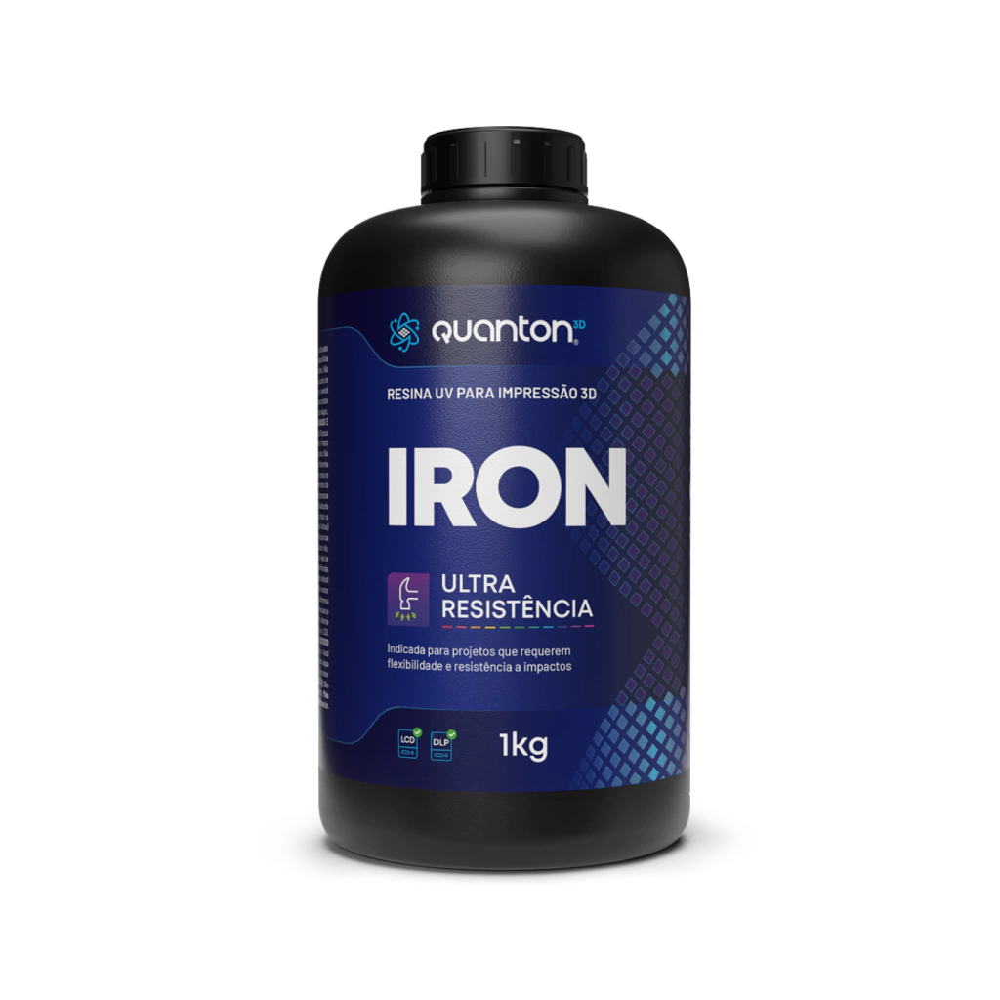
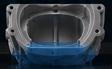
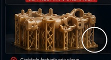
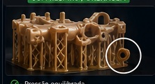
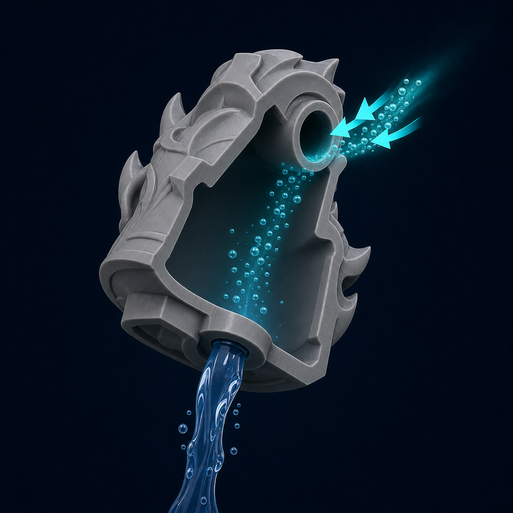

Cavidades fechadas e efeito de sucção na impressão 3D de resina
Reconheça geometrias que funcionam como ventosas, entenda por que a
pressão interna muda durante a elevação e projete respiros e drenos
que protegem superfícies, suportes e aderência.
Efeito de sucção explicadoFuro de ventilação × cavidade fechadaDiagnóstico interativo
O processo em uma frase
Uma cavidade que forma um selo contra a película precisa
comunicar-se com o exterior cedo o bastante para equalizar
pressão. Para drenagem, lavagem e secagem confiáveis, volumes
grandes normalmente se beneficiam de rotas separadas de entrada e
saída.
1
A regra principal: toda cavidade precisa respirar
Cavidades e câmaras aparecem com frequência em modelos ocos,
concavidades, domos, recipientes e geometrias que fecham uma
área contra a película.
Quando o modelo e a FEP formam uma câmara fechada, a resina
ou o ar não conseguem circular livremente entre o interior e o
exterior. Na elevação, a mudança de volume cria uma diferença de
pressão e adiciona esforço ao modelo, aos suportes e à própria
película.
Correção principal: reoriente, use abertura funcional ou
bloqueie o oco local para impedir que a geometria forme um copo
selado. O furo precisa comunicar-se realmente com o volume
crítico.
O objetivo do furo não é apenas escoar resina depois da impressão.
Durante a própria impressão, ele funciona como
ventilação e equalização de pressão.
Atenção: aumentar suportes, exposição de base ou força de
contato pode esconder parte do problema, mas não elimina a causa
se a cavidade continuar selada.
Peel não é automaticamente sucção
Toda camada bottom-up exige separação da película e sofre carga
de peel. Isso ocorre também em peças sólidas. O
efeito ventosa aparece quando uma concavidade cria um
volume selado ou com fluxo severamente restrito, adicionando
diferença de pressão à carga normal.
Peça oca não é automaticamente ventosa
Uma peça pode ser oca e permanecer ventilada desde o nascimento
da cavidade. Também pode ser sólida e conter uma concavidade
externa que funciona como copo. O diagnóstico depende da
sequência de camadas, não apenas do comando “hollow”.

Aplicação técnica Quanton3D
Iron: resistência para geometrias exigentes
A escolha da resina influencia rigidez, absorção de esforço e
tolerância a falhas. Mesmo assim,
nenhuma formulação substitui ventilação e drenagem bem
projetadas.
2
Quando a geometria vira uma ventosa
É uma região cujo volume interno fica isolado no momento em que
a camada toca a película, ou quando a cavidade sobe sem permitir
entrada de ar.

Cavidade aberta
Aberturas conectadas ao volume interno permitem equalização de
pressão e também ajudam na lavagem e secagem.
Cavidade selada
A geometria só deixa de funcionar como ventosa quando existe
uma passagem contínua para entrada de ar ou resina.
3
Como a sucção nasce durante a elevação
Este é o caso clássico do chamado efeito de sucção em impressão
bottom-up.
Câmara cheia
O momento da separação
Enquanto a resina líquida (pouco compressível) não consegue
preencher o volume tão rápido quanto o ar faria, a força de
separação aumenta.
1. Câmara cheia — antes do descolamento, a cavidade
está preenchida principalmente por resina e a diferença
inicial pode ser pequena.
2. Início da elevação — a plataforma puxa o modelo para
cima enquanto a película começa a se desprender.
3. Baixa pressão — como a resina líquida é pouco
compressível, o novo volume não é preenchido com a mesma
facilidade que seria com ar.
4. Força adicional — a diferença de pressão atua sobre
a área da câmara e aumenta o esforço de separação.
5. Defeito ou falha — podem surgir depressões, pequenos
furos, deformação, ruptura de suportes ou perda de aderência.
Relação física conceitual
F ≈ ΔP × A
A força associada à diferença de pressão cresce quando aumenta a
diferença de pressão (ΔP) ou a área projetada da câmara (A). Esta
relação é conceitual e não substitui medição de força na
impressora.
Uma concavidade larga pode gerar muito mais esforço que uma
cavidade estreita, mesmo que ambas tenham a mesma profundidade.
◯ Seção da câmaraQuanto maior a área fechada contra a película, maior tende a
ser a força associada.
↟ Velocidade de elevaçãoUma separação mais rápida dá menos tempo para o fluido se
redistribuir.
≋ ViscosidadeResina mais viscosa oferece maior resistência ao escoamento
para dentro da cavidade.
4
Comparação prática: cavidade selada × ventilada
Alterne o botão para observar como a presença do furo muda o
caminho de fluxo.
CÂMARA FECHADA
Sem furo: a diferença de pressão aumenta no início do
descolamento e adiciona carga ao modelo.
5
Como a pressão desigual aparece na superfície
Em corpos ocos de parede fina, pequenas diferenças de pressão já
podem deformar a superfície ou deixar pontos rebaixados.

Sem furo
A pressão desigual pode deixar pequenas cavidades, pontos
afundados e uma superfície mais irregular.

Com furo
Com a pressão equalizada, a superfície tende a manter melhor
sua geometria e apresentar menos defeitos.
Importante: a comparação visual ilustra o mecanismo, mas não
define um resultado universal. O resultado exato varia com resina,
geometria, orientação, impressora, velocidade, espessura e
parâmetros.
6
Quando a peça carrega resina para fora do tanque
Mesmo depois de sair do banho, uma cavidade sem entrada de ar
pode continuar carregando resina líquida.
Resina presa pela pressão
O que acontece nesse estágio
À medida que a peça sobe, parte da câmara fica acima do nível
do tanque. Sem ar no interior, a pressão externa ajuda a
sustentar a coluna de resina dentro da cavidade.
Câmara pequena e parede robusta: o efeito pode ser
pouco perceptível.
Câmara grande: o peso da resina retida se opõe à força
de tração da plataforma.
Suportes frágeis: podem romper devido ao esforço
adicional.
Aderência insuficiente: o modelo pode se desprender da
plataforma.
Correção obrigatória em câmaras grandes: permita entrada
de ar para reduzir a diferença de pressão e deixe uma rota real
de drenagem.
7
Como criar respiro e drenagem que realmente funcionam
Não existe um diâmetro universal. O projeto deve considerar
geometria, escala, viscosidade, orientação e possibilidade de
limpeza.
Rompa o selo cedo
Posicione o furo para que a cavidade deixe de ficar hermética
nas primeiras camadas em que começa a fechar contra a FEP.
Use área discreta
Coloque o furo em região pouco visível, mas não sacrifique a
função hidráulica apenas para escondê-lo.
Favoreça a drenagem
Em relação à orientação de impressão, um furo baixo ajuda o
escoamento de resina durante a elevação e a lavagem posterior.

Considere duas rotas
Em cavidades grandes, uma abertura pode drenar e outra admitir
ar, evitando que o fluxo fique limitado por um único orifício.
Evite bloqueios
Confira se suporte, raft, infill ou outra parede não fecha o
furo e recria a condição hermética.
Não use furo simbólico
Se a abertura não permitir fluxo suficiente para a viscosidade e
a velocidade usadas, a pressão ainda pode permanecer elevada.
Confirme a comunicação: o furo precisa alcançar a cavidade
principal; uma abertura que termina em outra parede não equaliza a
câmara desejada.
Boas práticas complementares: posicione a primeira
comunicação no ponto que rompe o selo mais cedo. Depois avalie uma
segunda abertura em posição oposta para circulação no pós-processo.
O número e o tamanho dependem do volume, viscosidade, comprimento do
canal e acesso de limpeza.
Teste funcional da abertura
No preview, confirme a camada exata em que o vazio começa e a
camada em que o furo o conecta ao exterior.
Verifique se o furo continua aberto depois de suporte, raft,
compensação e exportação do arquivo.
Simule a posição durante lavagem e secagem: líquido precisa sair
enquanto ar ocupa o volume.
Em canais longos ou resina viscosa, avalie vazão real; diâmetro
externo aparente não revela a restrição interna.
Não vede o furo antes de confirmar interior limpo, seco e
pós-curado conforme o material.
8
Fluxo de verificação no fatiador
Independentemente do programa utilizado, o fluxo deve garantir
que nenhuma cavidade permaneça fechada durante a sequência de
camadas.
Oriente o modelo
Defina a posição antes de decidir a localização dos furos.
Crie a cavidade interna
Defina espessura, precisão e estrutura interna de forma
consciente.
Adicione furos
Perfure a parede até conectar cada abertura ao volume interno.
Procure cavidades fechadas
Use as ferramentas de análise do seu fatiador e confirme
manualmente no preview.
Revise o preview
Confirme a abertura no momento correto e ausência de novas
câmaras.
Finalize suportes
Garanta que os suportes não obstruam a entrada e a drenagem.
9
Estimador educacional de risco de sucção
O resultado é relativo e serve para priorizar correções. Não
calcula a força real da impressora.
Use uma medida aproximada da maior seção fechada.
Leitura do cenário
Área equivalente1.963 mm²
Nível de riscoBaixo
A abertura adequada reduz fortemente a diferença de pressão.
Confirme apenas se ela aparece cedo e não está bloqueada.
O índice combina área, elevação, viscosidade, ventilação e
posição. Ele não usa pressão medida nem substitui teste real.
10
Diagnóstico pelos sintomas
Marque o que está acontecendo e veja as hipóteses mais
prováveis.
Hipóteses e ações
Comece pela geometria: verifique se o modelo forma uma
câmara fechada contra a FEP ou acima do nível de resina.
!
Resina aprisionada é falha de segurança
O problema pode aparecer dias ou semanas depois da impressão.
Riscos tardios
Resina líquida migra por microtrincas ou furos e contamina
superfícies.
Cura residual e aquecimento podem gerar tensão, abertura da
casca e vazamento.
Solvente ou água presos dificultam pós-cura e alteram o
interior.
Odor persistente, massa variável ou som de líquido indicam
investigação, não liberação.
Critério de liberação
Fluxo livre entre aberturas, lavagem renovada até sair limpa,
drenagem completa, secagem confirmada e pós-cura compatível com
a geometria. Quando o interior não pode ser inspecionado ou
processado, prefira redesenhar a peça ou não torná-la oca.
Não entregue nem vede uma peça com suspeita de líquido
interno. Use luvas, contenha vazamentos e trate o resíduo como
resina não curada.
Uma revisão de dois minutos evita horas de impressão perdida.
Confirme antes de fatiar
A orientação não cria uma grande ventosa contra a FEP
Todas as cavidades fechadas foram identificadas
O furo alcança realmente a cavidade principal
A abertura aparece antes ou logo que a câmara começa a fechar
Existe comunicação suficiente durante a impressão e circulação
adequada no pós-processo
Suportes, raft e infill não obstruem os furos
O preview foi revisado camada por camada na região crítica
Velocidade de elevação e viscosidade foram consideradas
O pós-processo consegue lavar, drenar, secar e curar o interior
✓
Conclusão
O que fica do diagnóstico, em ordem de importância.
Uma cavidade selada altera o equilíbrio de pressão durante a
elevação e aumenta a carga sobre a impressão.
O esforço tende a aumentar com área da câmara, velocidade de
elevação e viscosidade.
Quando a cavidade sobe acima do nível do tanque, resina retida
adiciona peso e carga aos suportes.
Respiros e drenos conectados ao volume interno restauram o
fluxo e reduzem deformações, retenção de resina e falhas
mecânicas.
A correção deve começar no projeto e na orientação, não apenas
nos parâmetros ou nos suportes.
Regra de ouro Quanton3D: rompa o selo desde o nascimento
da cavidade e projete o pós-processo antes de imprimir.
Diretriz técnica Quanton3D
Geometria primeiro: antes de aumentar suporte ou
exposição, confirme se a própria forma cria uma câmara selada
contra a película.
Fluxo contínuo: garanta comunicação funcional durante a
impressão e circulação suficiente para lavagem e secagem;
volumes grandes normalmente pedem duas rotas.
Validação por camada: revise o preview desde o nascimento
da cavidade até a saída completa do tanque. Um furo tardio não
corrige as camadas anteriores.
Processo completo: ventilação, drenagem, lavagem, secagem
e cura interna fazem parte do mesmo projeto — não devem ser
tratados como etapas isoladas.